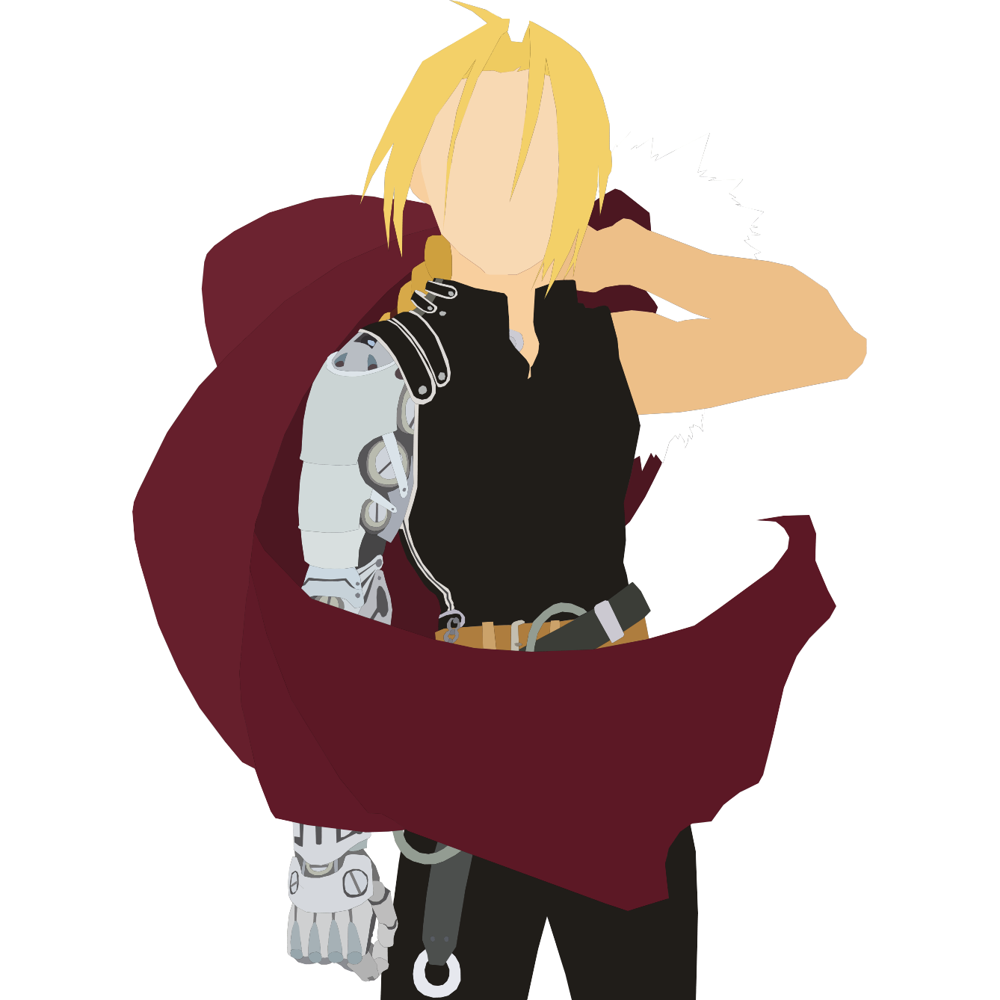
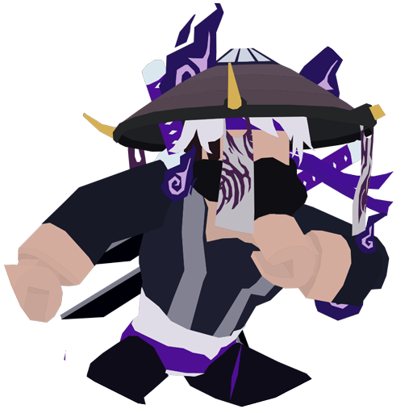

About Meruem: I originally picked up the minimalist art style from a friend of mine, but put my own twist on it, making it much more blocky and removing the face from the characters. Most of my subjects come from shows I watch, as the character designs are pretty interesting and are cool to look at. This one (top-left) is of the main antagonist in Hunter x Hunter, Meruem. It served as the background on my old laptop for several years.
About Astro: The most fun I've had in making a drawing was from a commission I received from a Roblox player named Astro. The character design was very interesting, and I hadn't tried making something based off of a 3D model yet, so it was going to test the versatility of my skills. I think it turned out really well, and he enjoyed the final product (bottom-center).
About Ed Elric: My first drawing was from a character named Ed Elric from the anime Fullmetal Alchemist. It was VERY rough, and there was almost no detail; this is something I'd word towards improving in my later creations. In 2023, I actually remade that drawing to see how much I've improved. The image above (top-right) is of the remastered, new drawing. I kept the same shape and pose, but added a substantial amount of detail and worked out much of the flaws with the first drawing.